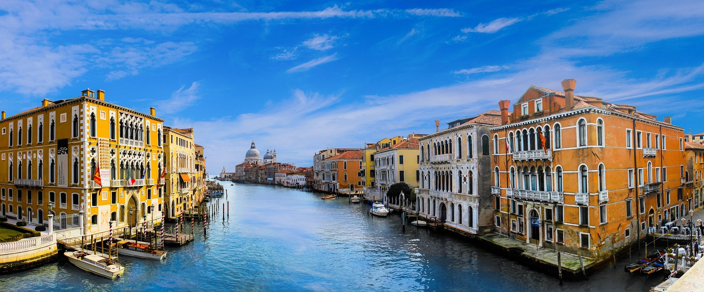

“Baked goods are popular all over the UK. In the Lake District, Cartmel is famous for its sticky toffee pudding and Bakewell for its pudding: a pastry base filled with jam and a layer of almond cake. Cornwall and Devon both serve cream teas with scones, the difference being that the Cornish serve the cream on top of the jam, rather than underneath it. Meat pies (cold pork pies and hot steak and kidney pies) are a good lunchtime choice, and fish and chips are essential eating near the seaside. Curry is now British through and through. There’s also cheese, try Yarg, Stichelton and Red Leicester, as well as Cheddar and Stilton.” - BBC Good Food
"Scotland’s national dish is haggis, a savoury meat pudding, and it’s traditionally accompanied by mashed potatoes, turnips (known as ‘neeps’) and a whisky sauce. Which brings us to the national drink – whisky. Over 100 distilleries in Scotland produce this amber-hued liquid, many of which can be explored on a tour. There are five Scottish whisky regions, each with their own distinct flavours. Other traditional things to eat include desserts such as Cranachan, sweet treats like shortbread and tablet and savoury dishes, including Scotch broth and black pudding. Various regional cakes and snacks can be found across the country." - Scotland.org
The gastronomy of Spain is known the world round, whether it’s the carefully crafted paella or the oh-so-naughty patatas bravas. But when it comes to mastering the local cuisine there are a few basic rules you’ll need to obey if you want to cook and eat like a native. Whether it’s adding that pinch of something special or knowing what to order and when, our local’s guide to Spanish cuisine has got it all covered. Tapas – the little portions of food that are either handed out for free when you purchase a drink or purchased for a few euros over the counter at the bar. What do chorizo, patatas bravas, and Galician-style octopus all have in common? They wouldn’t be what they are if it wasn’t for the key ingredient: smoked paprika – known as pimentón in Spain." - theculturetrip.com